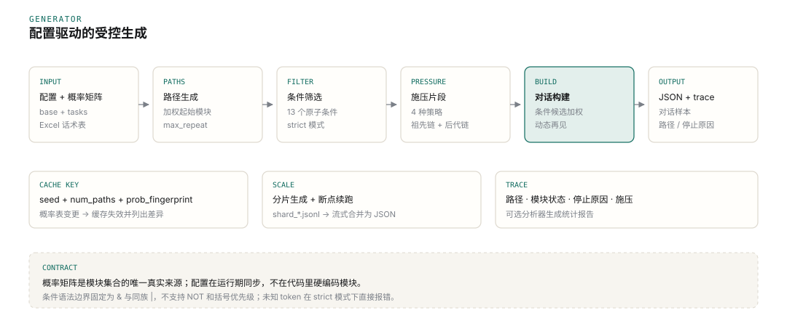

概率矩阵是模块集合的唯一真实来源
我希望路径生成与配置校验始终遵循同一套模块定义，避免多处维护造成规则漂移并降低维护成本。
因此，模块集合直接从概率矩阵的行列名提取，配置在运行期由
sync_config_from_prob() 同步，不在代码中重复维护模块列表。
Case 02 · Generator
我设计这套引擎时，主要解决人工编写对话效率低、难以随业务需求变化快速切换场景的问题。 系统读取标注人员维护的 Excel，以大量可复用的简单句为基础，按“路径生成 → 条件解析 → case 模板生成 → 特殊场景模块处理”的框架批量构造多轮对话，并支持通过调整配置和模板快速适配新场景。
验证口径（2026-11-16）：4 种为已实现且可由配置切换的特殊场景模块处理策略；
3 项为路径缓存键中的 seed、num_paths 与 prob_fingerprint；
55 为 test_conditions_parser.py 与 test_descendant_chain.py
两个测试文件的合计通过数，已实际复跑，不代表项目全量测试。
对话训练数据需要覆盖大量条件组合：同一阶段下，不同状态、不同客户反应会走不同路径。 人工编写无法穷举，而且难以保证分布可控；直接让 LLM 自由生成，则会出现三个问题：
因此引擎把“生成什么”交给配置和概率矩阵，把“是否适用”交给结构化条件， 把“特殊场景处理、对话结束”交给可切换模块与策略，并输出 trace 供分析。

核心流程是：读取 base + tasks 配置 → 读取概率矩阵和模板表 →
生成或复用路径 → 加载案例（占位数据与 system）→ 按条件筛选候选模板 →
插入特殊场景模块片段 → 构造对话 → 输出 JSON 与 trace。
我希望路径生成与配置校验始终遵循同一套模块定义，避免多处维护造成规则漂移并降低维护成本。
因此，模块集合直接从概率矩阵的行列名提取，配置在运行期由
sync_config_from_prob() 同步，不在代码中重复维护模块列表。
最初我未充分考虑未知条件被静默放行的影响；配置错误如果继续参与生成，可能造成数据失真与分布漂移。
为此，我将涉及数据生成的解析错误改为显式失败：解析器按 & 拆分，
逐 token 查询注册表，同族条件支持 |；当前注册 13 个业务原子条件。
默认启用 strict 模式，遇到无法识别的 token 直接抛错，不再“当作无条件 + warning”。
我将数据规则校验前置到生成阶段之前，提前检查输入数据是否符合要求； 一旦发现异常，立即检出并终止生成，防止问题数据继续进入后续流程，避免在生成完成后才发现问题。 这种方式减少了无效生成与事后返工，提高了批量生产效率。 后来，我把这一前置校验思路复用到其他项目的生产流程中。
最初我按相同 seed 复用生成路径，后来发现其他参数变化时，相同 seed 仍可能命中旧缓存，
使新配置沿用旧路径分布。为此，我将缓存键扩展为
seed + num_paths + prob_fingerprint；概率表变化后缓存自动失效，
并列出具体不匹配项，避免无感知地复用旧路径。
我将特殊场景模块与普通模块区分处理：前者可能需要根据业务需求插入不同位置，
出现分布也需要独立控制。为此，我引入 normalized、absolute、
sigmoid、linear_decay 四种曲线策略，由工厂按配置创建；
模块片段沿“祖先链 + 后代链”筛选，并受总次数上限约束，以适配不同阶段的插入与分布要求。
最初采用串行合成时，生成速度难以满足批量任务需求，因此我改为分片并行生成以提高效率。
考虑到服务器断联、内存压力等中断风险，我进一步引入 checkpoint：并行生成器按分片写入 JSONL，
依据已完成的 shard_*.jsonl 恢复，最后流式合并为标准 JSON。
出现未替换占位符时直接中止，避免产出半成品。
针对多批次任务通常只有少量参数差异的情况，我采用 base + tasks 的分层 YAML： 基础配置与任务配置递归合并，每个任务只覆盖差异字段，并支持一次批量运行多个生成项目， 减少重复配置带来的时间成本与出错风险。运行期仍会对关键字段重新校验，避免无效配置进入生成流程。
PYTHONPATH=scripts_general，覆盖条件解析与后代链）。seed / num_paths / fingerprint 的具体差异原因。下面是一个完全虚构的中立域示例，只用于说明“路径 + 条件 + 模板”的组织方式， 不对应任何真实业务文本。
user : 你好，我想把下周二的预约改到周四。
assistant : 可以的，您原本是周二上午十点，对吗？
user : 对，改到周四下午三点。
assistant : 已为您改到周四下午三点，稍后会发送确认短信。
对应结构：身份确认 → 信息核对 → 变更确认 → 结束；
每一步的候选模板受条件筛选，结束由再见概率控制。
& 与同族 |，不支持 NOT 和括号优先级。团队给出初始方向，我负责架构设计与主要实现：配置合并与概率表同步、条件解析器与原子条件体系、 路径生成与缓存指纹、特殊场景模块处理策略接入、分片并行与续跑、trace 与分析。 项目规模约 90 个 Python 文件、13,961 行。